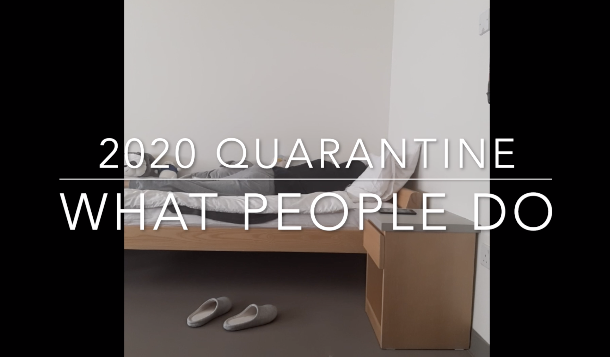
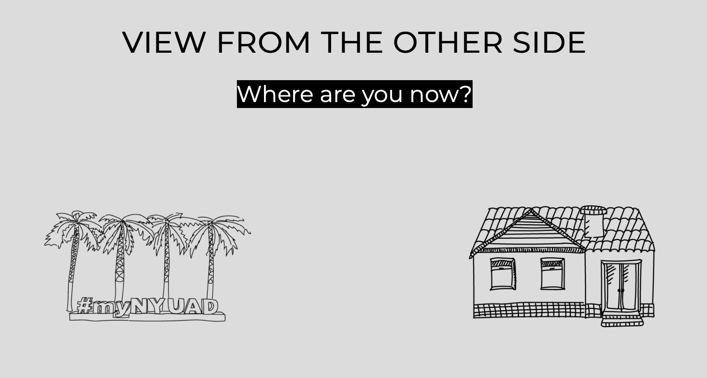

-
What People Do

NYUAD Comm Lab: 30 Minute Film Festival Project
a video about quarantine life
Fall 2020
Documentation
-
View from the Other Side

NYUAD Comm Lab: Group Video Project
a video comparing two different time/space/life
Fall 2020
Documentation
-
Living Sparks '19
video documentation of the wonders in 2019
Jul. - Dec. 2019
-
central taiwan '19
video documentation of a trip to central taiwan
Sun Moon Lake, Sea of Daylily, Gaomei Wetlands (日月潭、金針花海、高美濕地）
June 2020
-
hualien & yilan '20
video documentation of a trip to hualien（花蓮）& yilan（宜蘭）
Oct. 2020